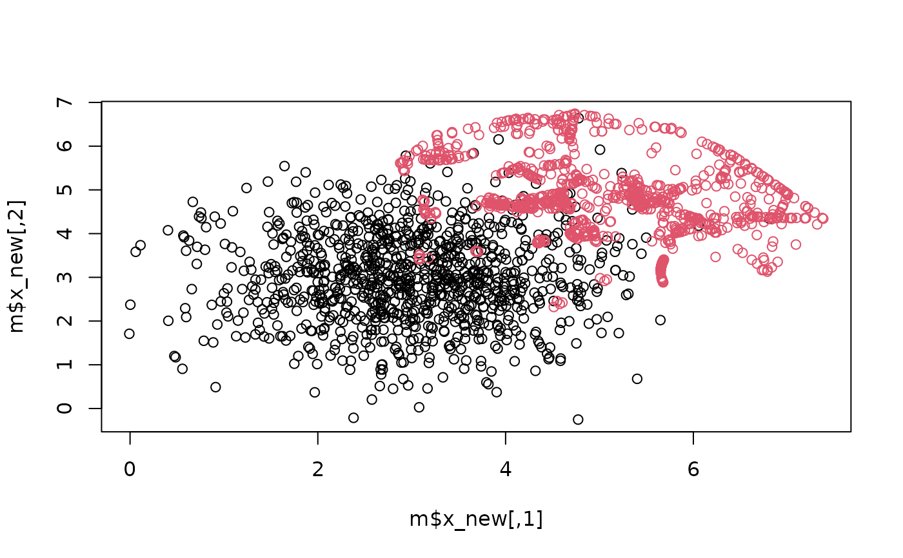

Oversampling followed by DatRel (2025)
oversampleDatRel.RdGenerates synthetic samples with a base method and post-processes them with DatRel. DatRel (Saglam, 2025) makes the synthetic samples of any
oversampling method safer: synthetic samples that fall outside the regions
that the class covers are moved back into them. DatRel is not an
oversampling method itself; it relocates the samples generated by a base
method.
Arguments
- x
feature matrix.
- y
a factor class variable. Can have more than two classes.
- method
base oversampling method that generates the synthetic samples. One of
"ROS","RWO","ROSE","SMOTE","ADASYN","BLSMOTE","SLSMOTE","RSLSMOTE","GSMOTE","SMOTEWB","BiSMOTE","MCSMOTE","EBSMOTE","GQEO","LEAO","SyMProD","RadiusSMOTE"or"VSSMOTE". Default is"SMOTE".- ovRate
Oversampling rate, as in the base method: class \(j\) receives
round(ovRate * (n_max - n_j))synthetic samples. Default is 1.- proportion
proportion of the samples of a class that has to be covered by the dominating balls. Default is 1 (all samples).
- p_of
overflow proportion: the radii of the balls are multiplied by
1 + p_of, so the synthetic samples are allowed to stay slightly outside of the class region. Default is 0.- ...
arguments of the base method, for example
k = 7formethod = "SMOTE".
Value
a list with resampled dataset.
- x_new
Resampled feature matrix.
- y_new
Resampled target variable.
- x_syn
Generated (relocated) synthetic feature data.
- y_syn
Generated synthetic label data.
- i_dominant
List (one element per class) of the indices of the dominating samples within the class.
- x_dominant
List of the dominating samples.
- radii_dominant
List of the radii of the dominating balls.
- cover_proportion
List of the proportions of the class covered.
- n_relocated
List of the numbers of relocated synthetic samples.
Details
Year: 2025. For every class (one-vs-rest for more than two classes)
a ball is placed around each sample whose radius is the distance to the
nearest sample of the other classes (times 1 + p_of), so that the ball
contains no sample of another class. A small set of dominating samples whose
balls cover the class (pure and proper class cover catch digraph, PCCCD) is
selected greedily. Each synthetic sample is assigned to the dominating ball
with the smallest ratio of distance to radius. If the sample is outside of
that ball, it is moved onto the border of the ball along the line to the
dominating sample. The cover algorithm is the C++ implementation of the
rcccd package, which is included here.
References
Saglam, F. (2025). DatRel: a noise-tolerant data relocation approach for effective synthetic data generation in imbalanced classifiers. Machine Learning. doi:10.1007/s10994-025-06755-8
Examples
set.seed(1)
x <- rbind(matrix(rnorm(2000, 3, 1), ncol = 2, nrow = 1000),
matrix(rnorm(100, 5, 1), ncol = 2, nrow = 50))
y <- as.factor(c(rep("negative", 1000), rep("positive", 50)))
m <- oversampleDatRel(x = x, y = y, method = "SMOTE", k = 7)
m$n_relocated
#> $negative
#> NULL
#>
#> $positive
#> [1] 232
#>
plot(m$x_new, col = m$y_new)
